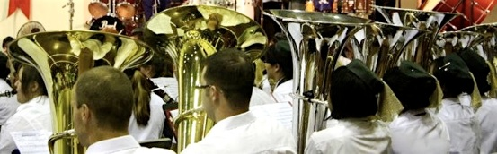

Friends of SNYSB
The Band has a Friends Association for all supporters of the Band that are not current parents. Friends receive a copy of the Bands Newsletter each month that keeps them up-to-date with Band concerts and events. Friends are also able to buy tickets before they go on sale to the general public.
There is an annual subscription charge of £5.00 which covers postage and printing.
Cheques should be payable to: SNYSB and sent with your name address and contact details to: The Treasurer, Brick Kiln Farm, Cross Road, Starston, Harleston, Norfolk IP20 9NH.
